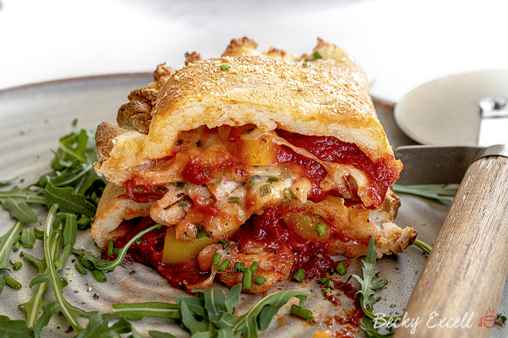

Gluten Free Calzone

Description
If you’ve never had one before, it’s sort of like a pizza pastry. Think lovely, light, crisp pizza dough on the outside, concealing the contents of an oozing, melty pizza in the middle. You just can’t beat it!
Ingredients
For the dough
- 350g yoghurt (natural yoghurt, greek yoghurt or a lactose free or dairy free alternative)
- 340g gluten free self raising flour
- 1/2 tsp salt
- 1/4 tsp xanthan gum (can omit if your flour contains it, but if you have it, add it in anyway!)
- 1/2 tsp gluten free baking powder (optional)
For the filling (it’s your choice but here’s an idea!)
- passata
- tomato puree
- oregano
- garlic infused oil
- salt and pepper
- chives
- cheese (regular mozzarella, dairy free, vegan or lactose free whatever you usually have)
- chopped veggies (such as peppers)
Extras
- 1 egg
- grated cheese (on top)
Directions/Steps
- Preheat your oven to a very hot temperature!
- Add all your ingredients into a bowl and mix together. I initially just do this with a spatula and then as it starts to come together I use my hands to ensure it’s all pushed into a big ball.
- Cut the dough into 2-4 pieces - it can make either 2 huge calzone, 3 medium calzone or 4 smaller sized ones. I usually split mine into 2.
- On a lightly floured surface use a rolling pin to roll out your first dough portion. I roll mine to 0.4cm. Try to do this in an oval shape.
- Sometimes I find it helps to fold over the dough to make sure both ends are the same shape. You can then trim of any excess at this point if not.
- Sort out your fillings. So for the tomato sauce, mix together your tomato puree (1 tsp), passata (200ml), herbs (1 tsp) , garlic oil (1 tsp), salt and pepper in a small bowl until it has a nice, thick consistency.
- Chop up your mozzarella into small pieces as well as any veg you’re using I used a yellow bell pepper.
- Spoon on and spread a small portion of your sauce, followed by toppings and then cheese on half of your calzone. Make sure you leave a good amount of space around the edge (about 1.5cm) as you need to fold the other-side over and you don’t want filling to ooze out.
- Brush the edge of your dough lightly with a little water to help it stick together. I actually just dabbed this on using my fingers all around the edges.
- Fold over your empty side of dough to go over the top of your filled side.
- Now, you can pinch this together to fully seal the calzone so the filling doesn’t come out. Basically just fold over a little section at a time to create a crimped look.
- Transfer your calzone onto a baking sheet – make sure that you use parchment paper if it’s not non stick.
- Use a sharp knife to cut 3 slits into the calzone. This will allow any excess moisture to get out and stop it from wanting to explode!
- Beat your egg in a separate bowl, then brush your gluten free calzone with the egg wash (or milk, melted butter, oil etc) all over the top. This will help to give it a lovely golden colour.
- Finish by sprinkling with a little pecorino cheese or parmesan.
- Place in the oven for 10 minutes until golden and crisp.